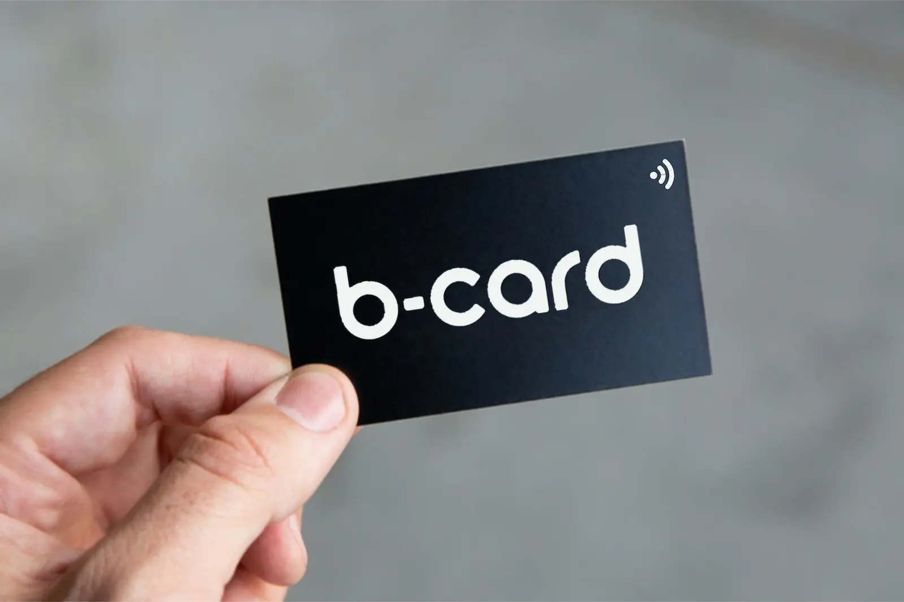

Welcome to B-Card
Your next-generation business card powered by NFC technology.
Why switch to NFC business cards?
NFC business cards are modern, eco-friendly, and always updated. Just tap your card on a smartphone and instantly share your contact info, portfolio, or social media profiles.
It’s fast, smart, and unforgettable.
Common Questions
What are NFC business cards?
NFC business cards are physical cards embedded with a small chip that can wirelessly transfer contact information or links when tapped on a compatible smartphone.
How do NFC business cards work?
When you tap an NFC card on a compatible phone, it transmits a digital link—usually a contact card or a webpage—that opens automatically in the browser.
Will this work with all phones?
Most modern smartphones support NFC. Android phones typically have it enabled by default. iPhones (from iPhone 7 and newer) support it as well.